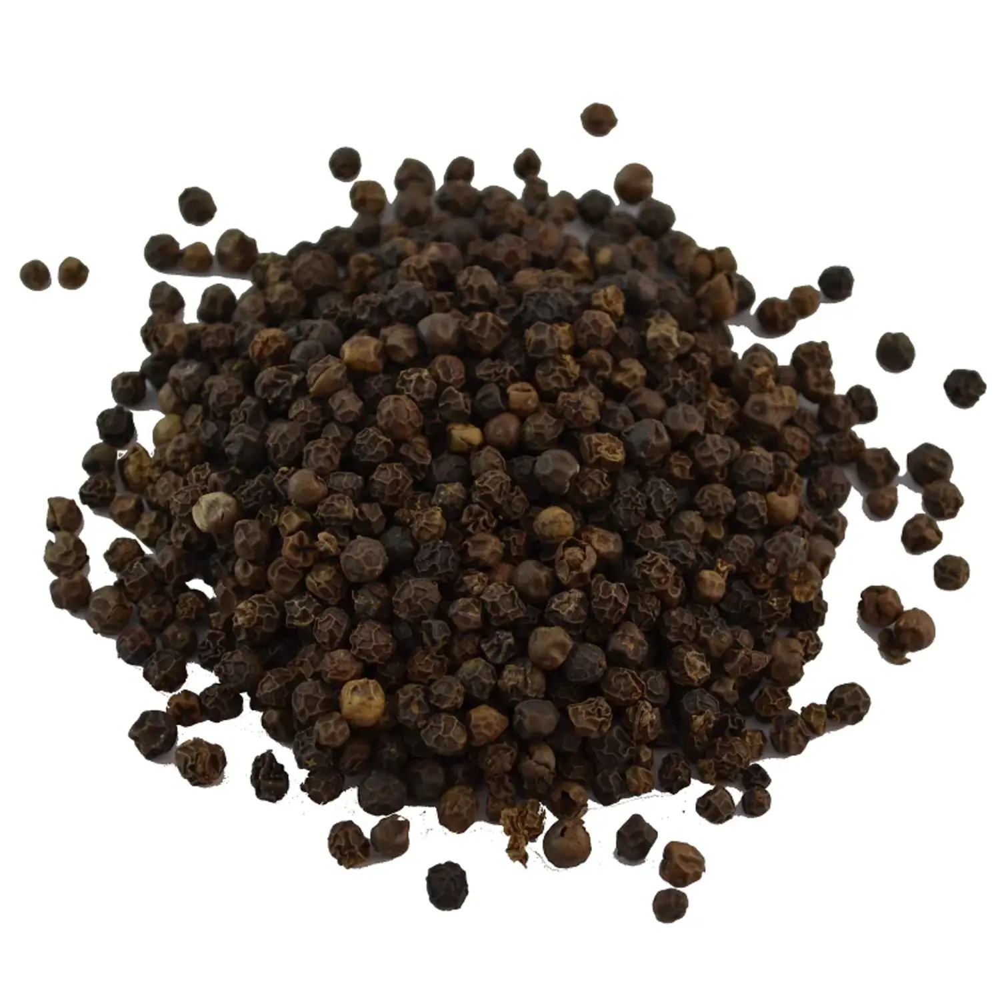
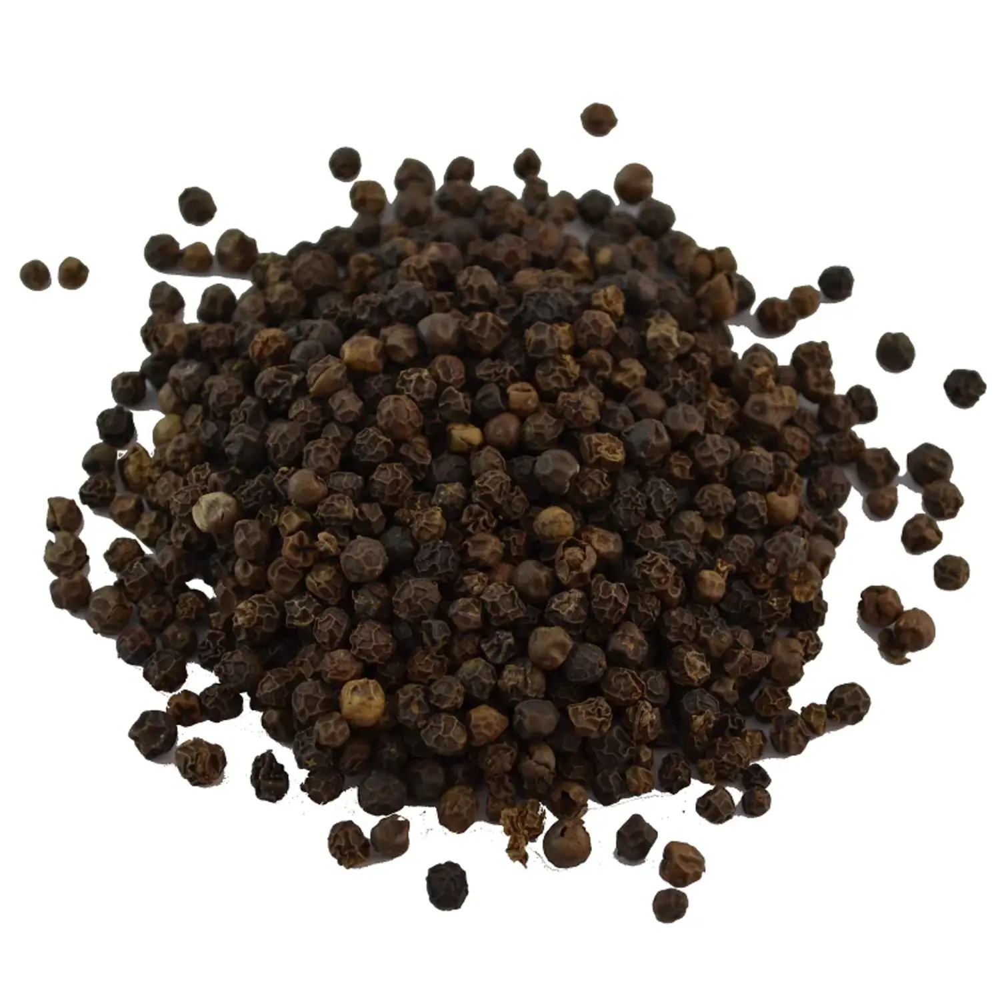
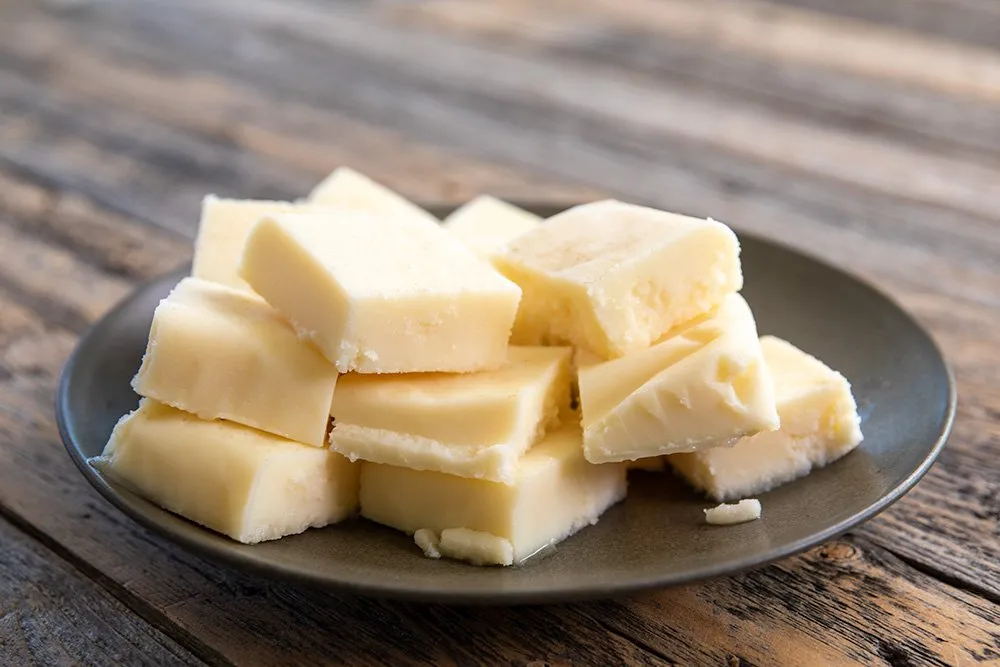
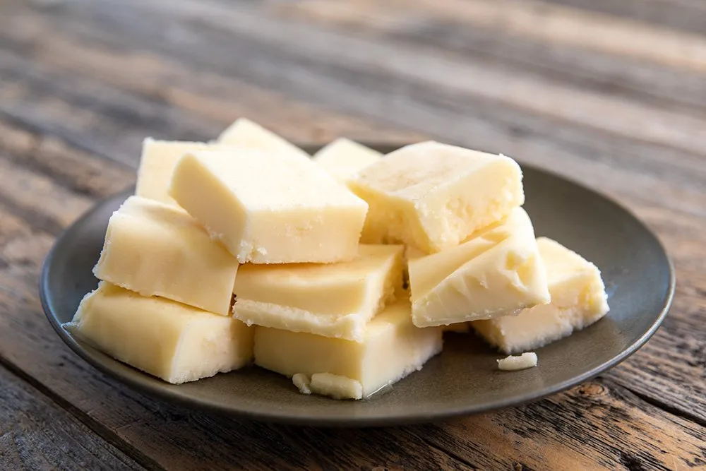
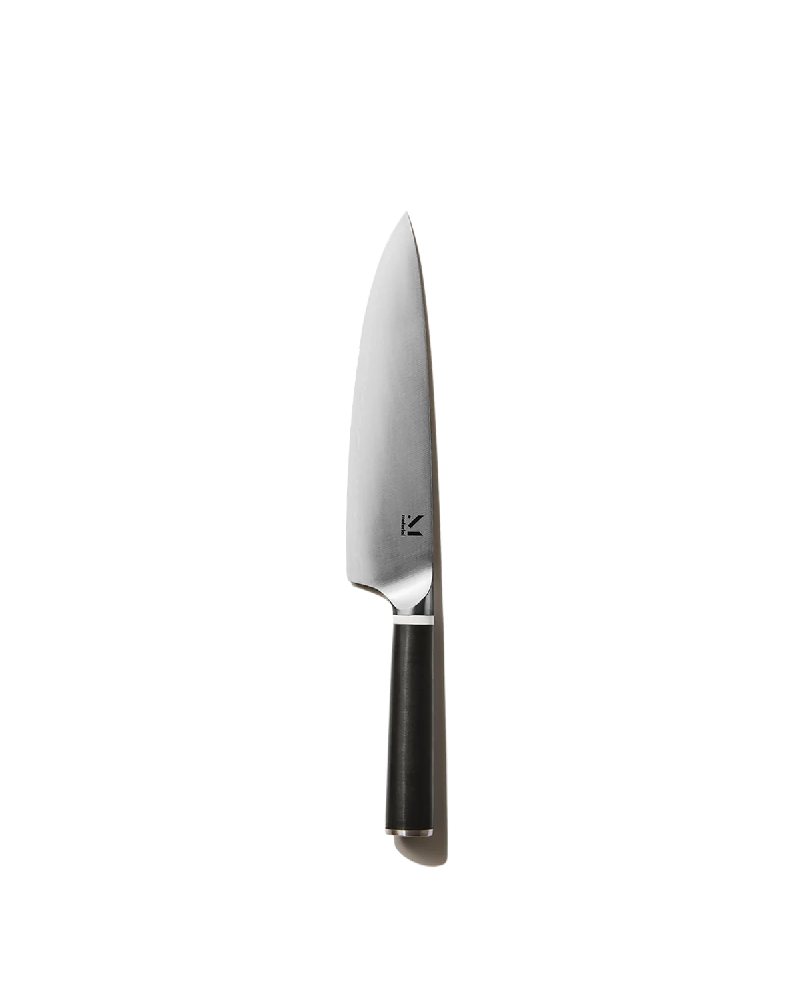
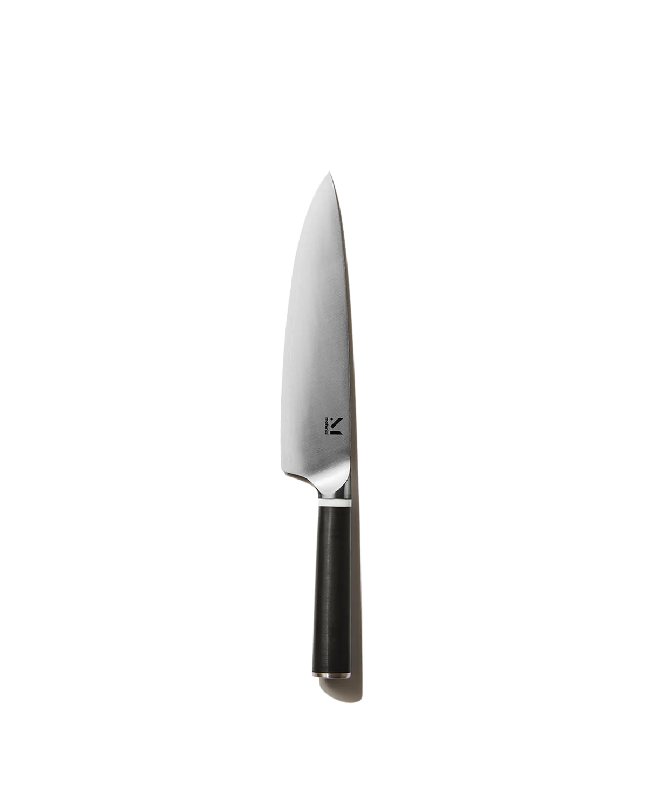
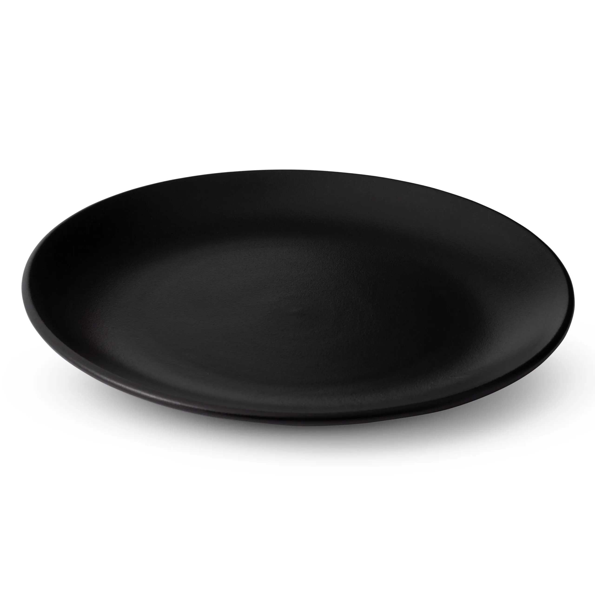
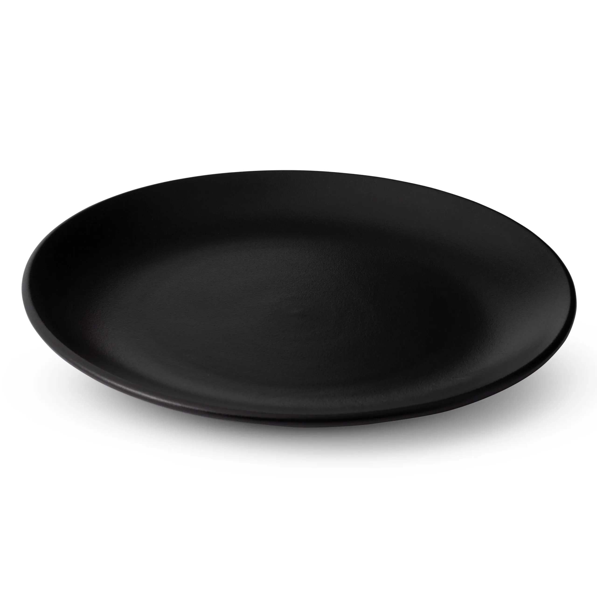

back
*Beetroot risotto*
- STEPS: Scrape the outer layer of celery and cut it to small pieces along with onion, bay leafs,salt and pepper
and let it fry in beef tallow,ghi butter or lard until the onion and celery get soft.
- When onion and celery get soft => add rice,fresh thyme and pour white dry/semidry wine in,
let it reduce and and then repeatedly add small portions of vegetable stock while mixing until the rice is done
- After first or second addition of vegetable stock, put the grated beetroot in and cook for 20 mins, meanwhile adding salt and pepper
- The moment your rice is done, we add butter, grated parmezan cheese and lemon juice. MIXING LIGHTLY TO PREVENT COLOR LOSS !!!
You will neeed :
-Ingredients
- ghi butter, lard, beef tallow
- celery
- rice
- onion
- bay leaf
- salt
- pepper
- fresh thyme
- fresh beetroot
- white dry/semidry wine
- vegetable stock
- parmigiano reggiano
- goat cheese
- argola/parsley
- touch of olive oil
- walnuts
- honey
-Accessories
- 1x cooking pot
- knife
- cutting board
- mixing tool
- grater
- empty bowl
- plate
- fork


 


 

 



 
